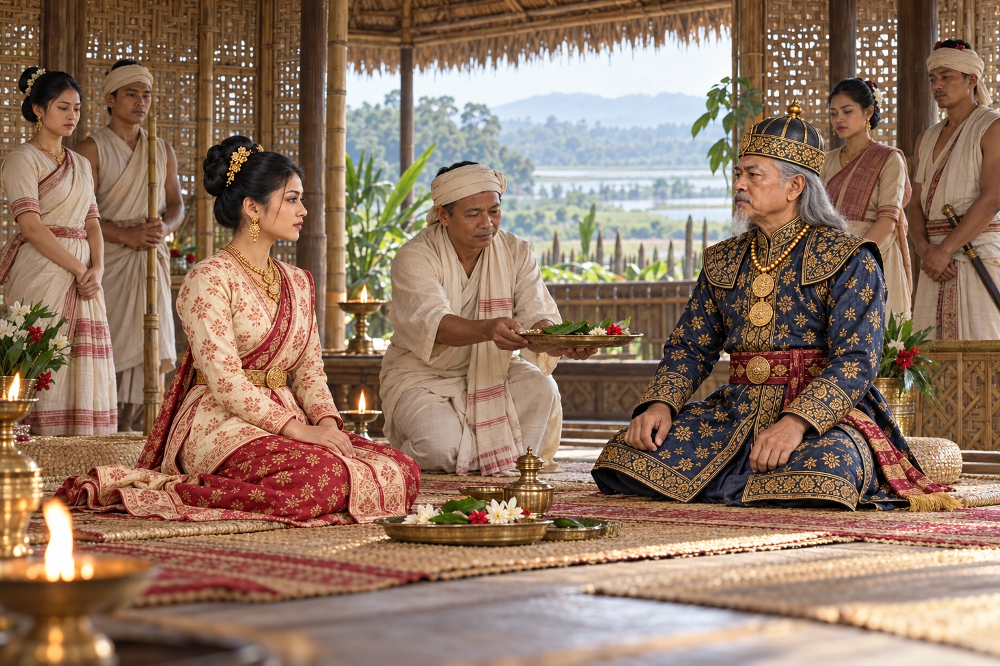

Pratap Singha Marries the Koch Princess Mangaldoi
1608 · Against the Mughal Empire

Pratap Singha marries Mangaldoi, daughter of the Koch Hajo king Parikshit Narayan, sealing an alliance against the Mughals.
Wikipedia spells her name Mangaldahi. Marriage ceremony staging is illustrative; Mangaldoi parentage varies across sources.
People: Pratap Singha (Susenghphaa), Mangaldoi (Mangaldahi)
Open this scene in the interactive archive · Follow this event on MAP